library(tidyverse)
library(flextable)
library(ggpubr)
library(kableExtra)4 ggplot themes
4.0.0.1 Load some pacakges
4.0.0.2 Load the mpg dataset
data(iris)Every row in mpg is a car, every column a feature of that car. mpg stands for miles per gallon.
head(iris) Sepal.Length Sepal.Width Petal.Length Petal.Width Species
1 5.1 3.5 1.4 0.2 setosa
2 4.9 3.0 1.4 0.2 setosa
3 4.7 3.2 1.3 0.2 setosa
4 4.6 3.1 1.5 0.2 setosa
5 5.0 3.6 1.4 0.2 setosa
6 5.4 3.9 1.7 0.4 setosa4.1 Standard themes
The default theme, featuring a gray background and white gridlines.
4.1.1 theme_gray
plot <- ggplot(iris, aes(x = Sepal.Length, y = Sepal.Width, color = Species)) +
geom_point()
plot + theme_gray()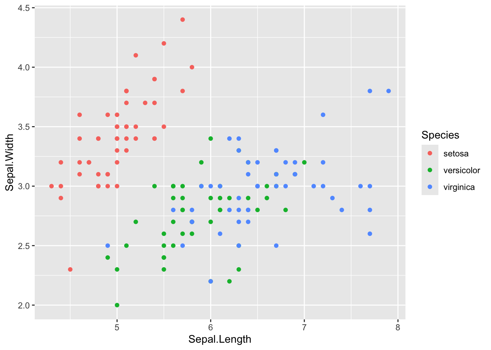
4.1.2 theme_bw
A black on white theme.
plot + theme_bw()4.1.3 theme_linedraw
A theme with only black lines of various widths on white backgrounds.
plot + theme_linedraw()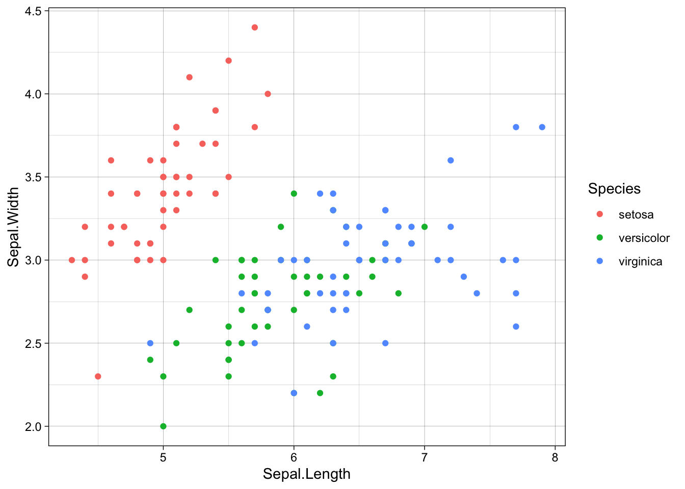
4.1.4 theme_light
A theme similar to theme_linedraw but with grey lines and axes designed to draw more attention to the data.
plot + theme_light()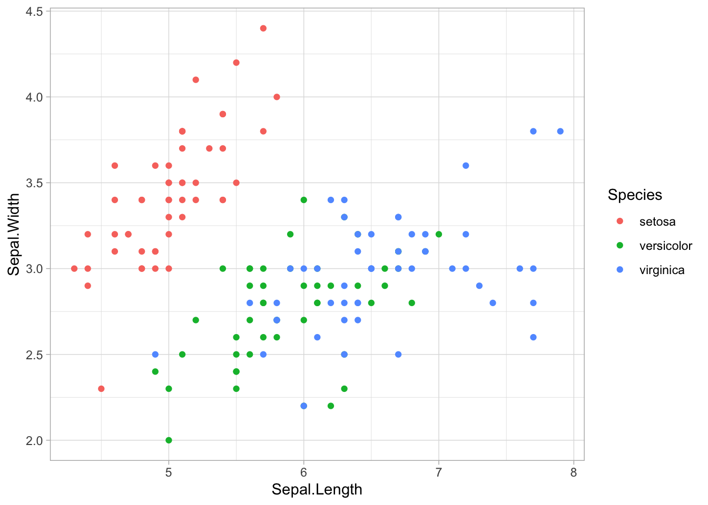
4.1.5 theme_dark
A theme similar to theme_light, but with a dark background. A useful theme for making thin colored lines stand out.
plot + theme_dark()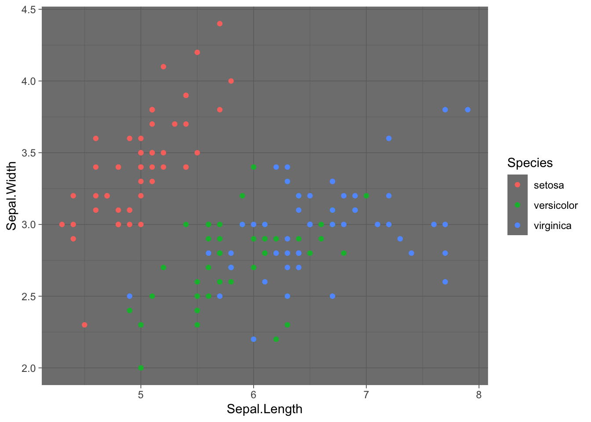
4.1.6 theme_minimal
A theme with no background annotations.
plot + theme_minimal()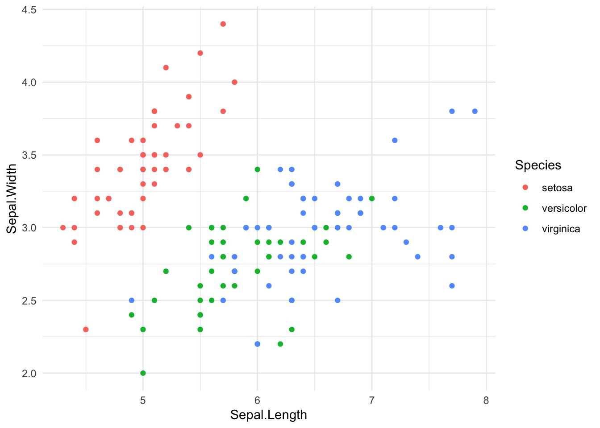
4.1.7 theme_classic
A theme with no gridlines.
plot + theme_classic()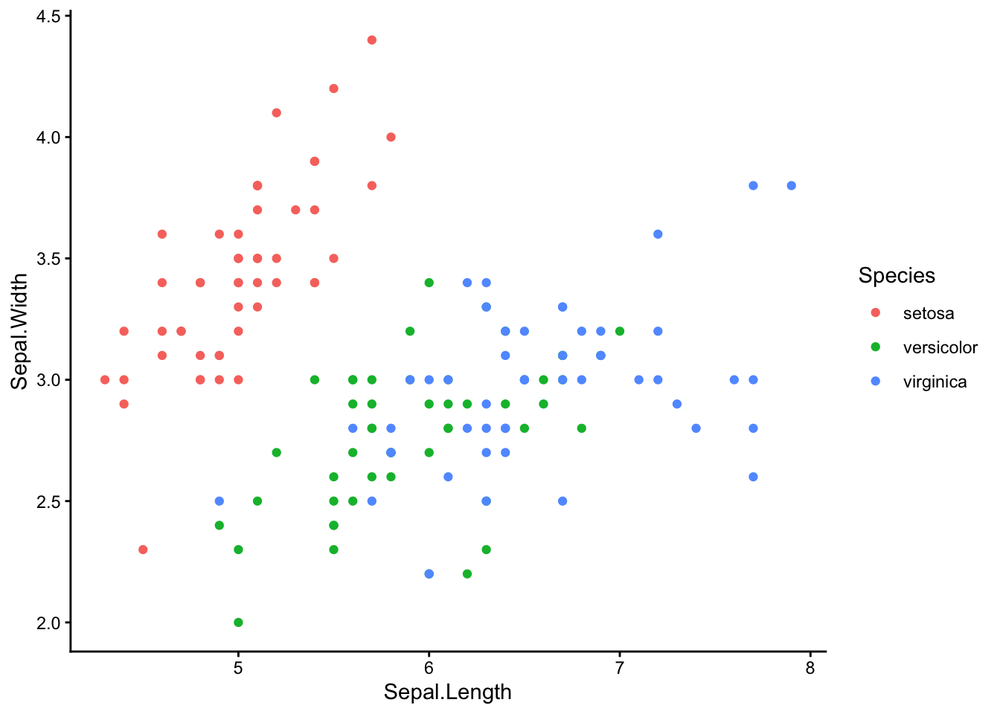
4.1.8 theme_void
A completely empty theme.
plot + theme_void()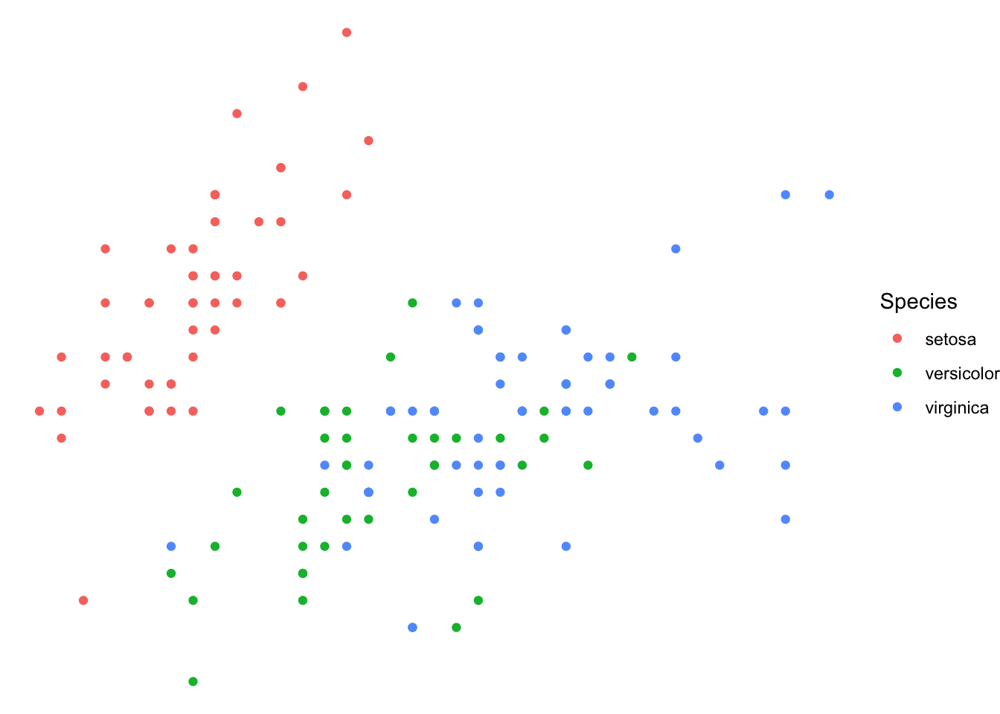
4.2 ggthemes library
Next, we’ll show a few examples of how to use the predefined themes to modify the aesthetics of plots.
library(ggthemes)4.2.1 theme_wsj
The Wall Street Journal’s theme.
plot + theme_wsj()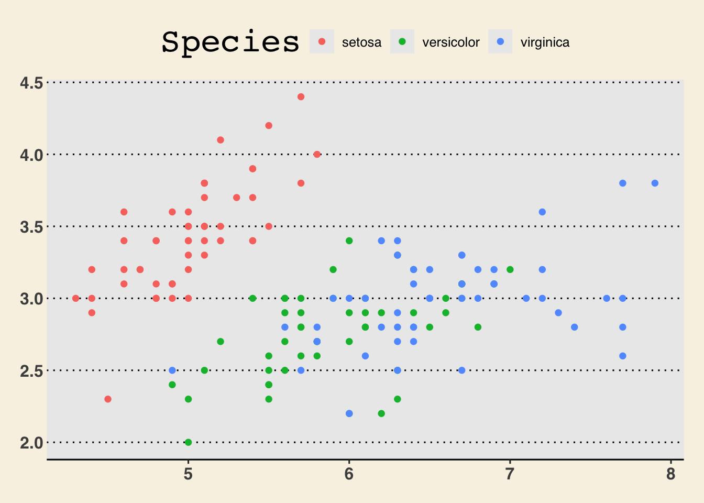
4.2.2 theme_tufte
A minimalist theme inspired by the work of statistician Edward Tufte.
plot + theme_tufte()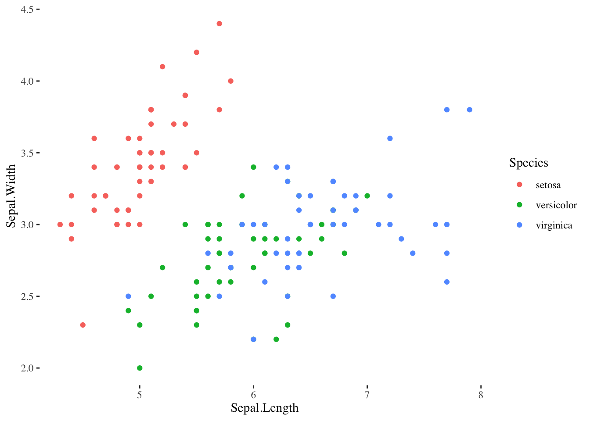
4.2.3 theme_solarized
A theme that uses colors based on the solarized palette.
plot + theme_solarized()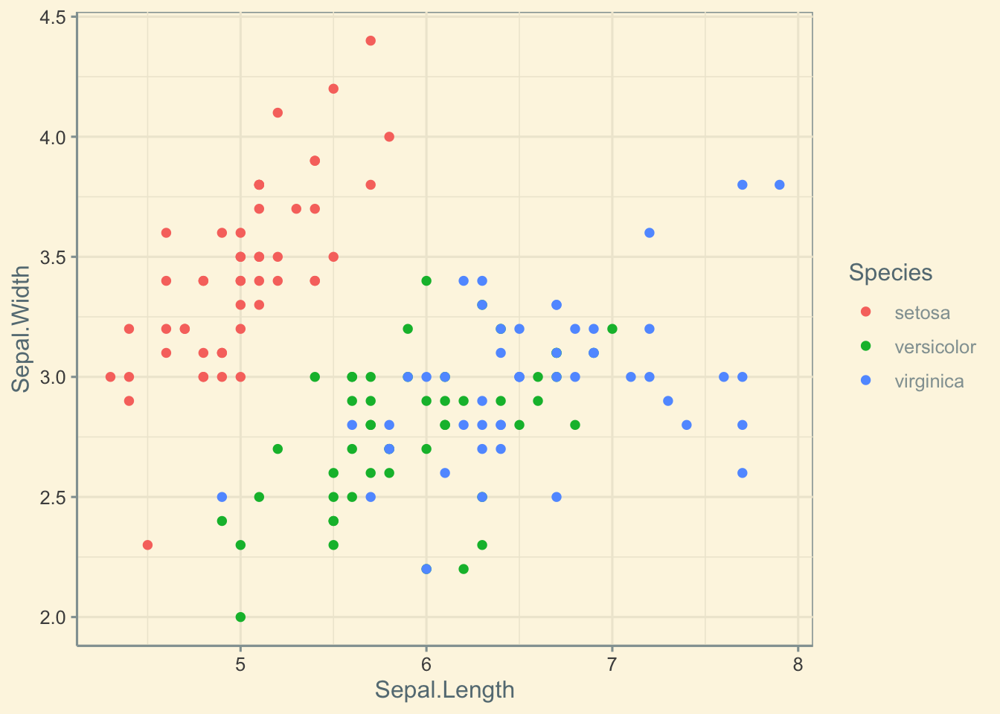
plot + theme_solarized(light = FALSE)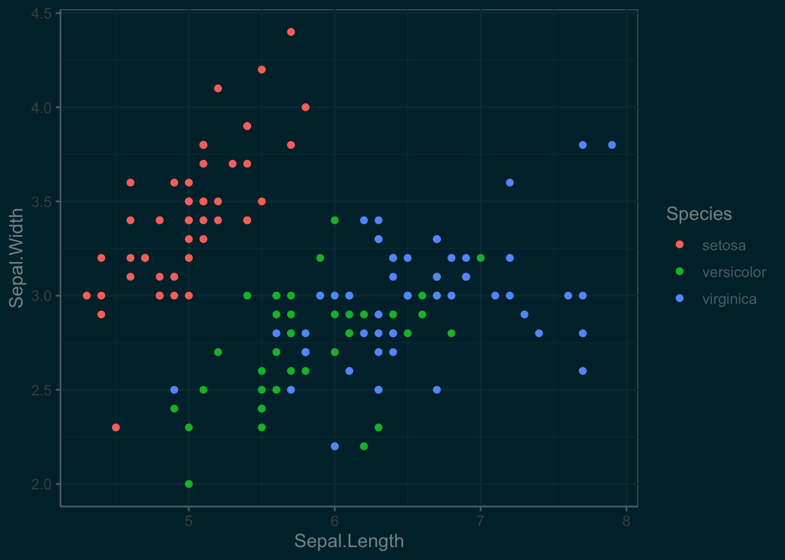
4.2.4 theme_gdocs
A theme with Google Docs Chart defaults.
plot + theme_gdocs()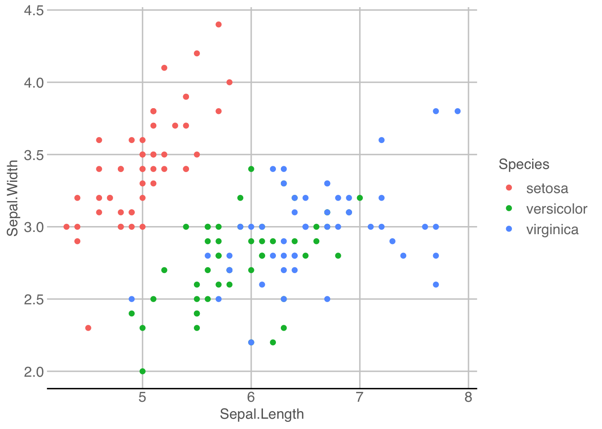
4.2.5 theme_fivethirtyeight
Theme inspired by fivethirtyeight.com plots.
plot + theme_fivethirtyeight()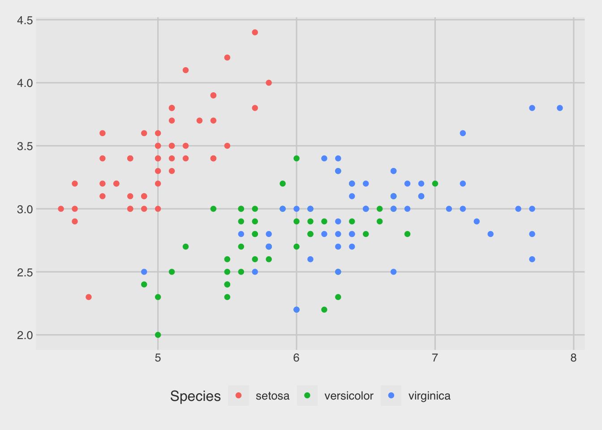
4.2.6 theme_economist
Theme inspired by The Economist.
plot + theme_economist()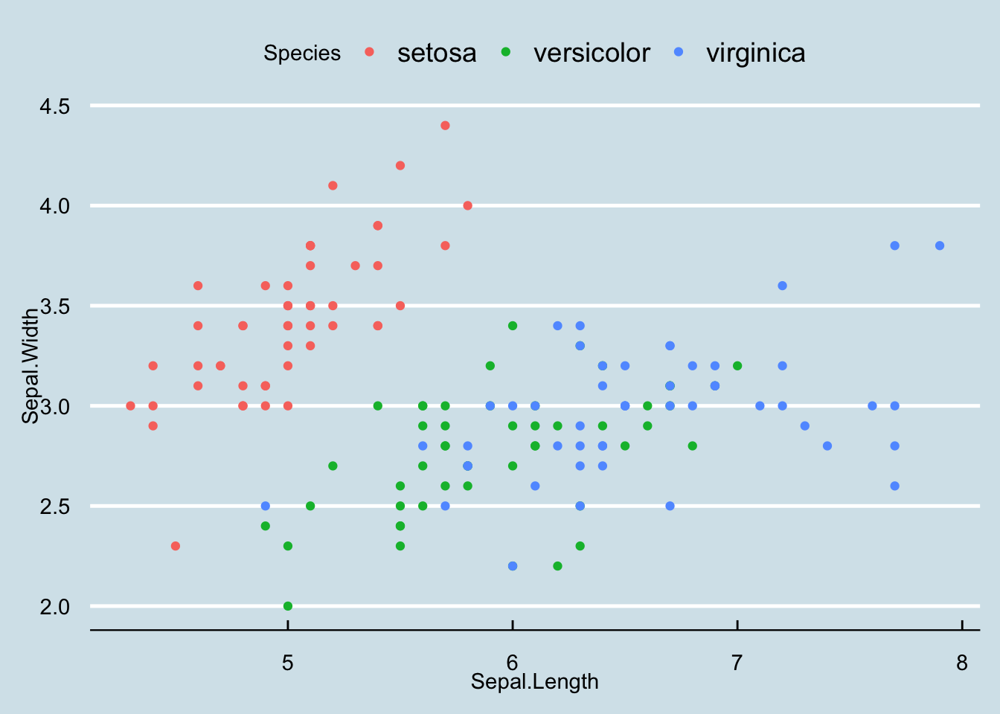